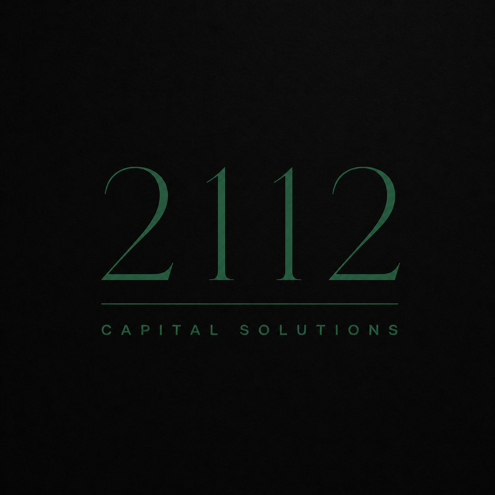

The AI image is the reference target. This page A/Bs real fonts and tuned color values against it so we can commit to exact tokens and reproduce the logo cleanly.

Libre Bodoni — softer than GFS Didot, closer to Canela's editorial luxury register. The reproduction now uses Libre Bodoni at 0.12em tracking with the secondary line at 0.27em tracking and ~14% of the numeral height (per ChatGPT's recipe). Compare directly above.Canela Light — Commercial Type, ~$200–300/weight. Top match for the AI's mood.Tiempos Headline Light — Klim, ~$200/weight. Editorial luxury, slightly more institutional.Lyon Display Light — Commercial Type, ~$300+. Private-bank annual report energy.Noe Display Light — Schick Toikka, ~$80. Sharper, more high-fashion.Didot LT Std — Adobe Fonts. Included in Adobe CC subscription if you have it.
0.12em tracking, secondary line at 0.27em tracking, secondary line sized at ~14% of numeral height. Same composition across all eight cards so the only variable is the font.Canela Light — Commercial Type, ~$200–300/weight. Closest match.Tiempos Headline Light — Klim, ~$200/weight. Editorial luxury.Lyon Display Light — Commercial Type, ~$300+. Private-bank annual report.Noe Display Light — Schick Toikka, ~$80/weight. Sharper, more fashion-coded.Didot LT Std — Free with Adobe CC subscription, otherwise ~$50-100.1. Lock primary emerald. Pick from the four color cards above. My recommendation: #0a5a36 (tuned).
2. Lock display serif. Pick from the six font cards above. My recommendation: Bodoni Moda (opsz 96).
3. S1 / S2 / S3. Sibling, cousin, or stranger to TBB? This determines the third tone (warm cream sibling, cool greige cousin, or other stranger).
4. Once 1–3 are locked, I'll produce the canonical SVG logo file, lock all tokens into a CSS file (tokens.css), and start the brand media kit HTML — palette, type scale, button states, form components, card variants — equivalent to TBB's design-complete.html.